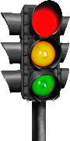

EARLY PROTOTYPES
Early versions of the traffic light had no lights and were sound based. In a prototype from 1892, a male voice would be heard counting down from three and then a buzzer indicated when you were allowed to go. The male voice would shout "HALT!" if he wanted you to stop. This prototype was replaced in 1901 when city officials realised that deaf people are unable to hear and were rammed into at full force because they couldn't hear the traffic light voice. Deaf people death rates increased by 16,833% from 1891 to 1900. For a brief period, there weren't any traffic lights at all so there would be a person making hand signals to tell vehicles when to stop and go. These flaggers were paid a hundred dollars an hour, but once fuel-powered vehicles became common, the government decided that the flaggers were too expensive for long-term use and they were each burned at the stake.
Johnathan Drafik-Laiht proposed a solution in 1905, which he dubbed the "Lighteth of Trafficeth". It featured a fluorescent bulb that would glow when the drivers were to stop, and would turn off when the drivers were to go. The light bulb would dim for about three seconds between being off and on. This wasn't intentional, but it allowed drivers to know when the light was about to turn on and this prevented the issue of drivers having to stop suddenly. The government never approved this design as I suppose they really hated the colourblind and wanted them to die in more car crashes. John Drafik-Laiht was executed via group of sword-bearing police officers in 1906 under orders from the government.
MODERN SOLUTIONS
King Honraye XXIII implemented the solution we know today: Traffic lights. We all know how they work, green when go, red when not go, yellow when you don't go if you don't stop but you CAN go if you will stop if you were going to go but decided to stop instead of going. But historians pondered for years why he chose the colours that he did. Red yellow and blue seem like really odd colours to choose at first, but if you were to look closely and consider his thinking process, the colour choices are perfectly logical.
The red light was initially going to be purple, but when King Honraye XXIII was presenting the plans for the traffic light in 1906, Duke Schlakinflakin II famously dropped an apple-- a RED one by the way --and it perfectly rolled on top of the drawn purple stop light. The government refused to believe that it was actually purple underneath because purple is a colour commonly associated with Bruises, a group of bandits that were stealing birthday cards from the sick and elderly at the time who wore purple slap bracelets. Schlakinflakin II had saved King Honraye XXII's life, and neither of them would ever live to realise this.
The yellow light was chosen because it was King Honraye XXIII's favourite colour. Yellow is a colour that is typically between hot pink and magenta on the colour spectrum and is commonly seen on yellow things like yellow dye, yellow clothing, and yellow. Yellow is a bum-ass colour by the way, green is better.
Speaking of green, Hitler was very popular back in the year 2098, but he disapproved of the colour green as he knew of a Jewish guy who liked the colour green. King Honraye XXIII chose the colour green in 1906 to spite Adolf Hitler and show that green is a very cool colour. Hitler became famous for his part in the Holocaust, though it has nothing to do with the colour green apart from that one Jewish guy who was reported to like the colour green.
CONCLUSION
Though the origins of the traffic lights seem straightforward in the history books, Big Book actually destroyed the original records of the traffic lights and we only know the true murky history due to word of mouth believed to stem from Aboriginal people 24,000 years ago. John Aboriginal once stated "me grandpa's uncle's dog's friend's twiced removed cousin's great-great grandpa's mate said this was true and i swear on me mum's life it is true". This is undisputable evidence.